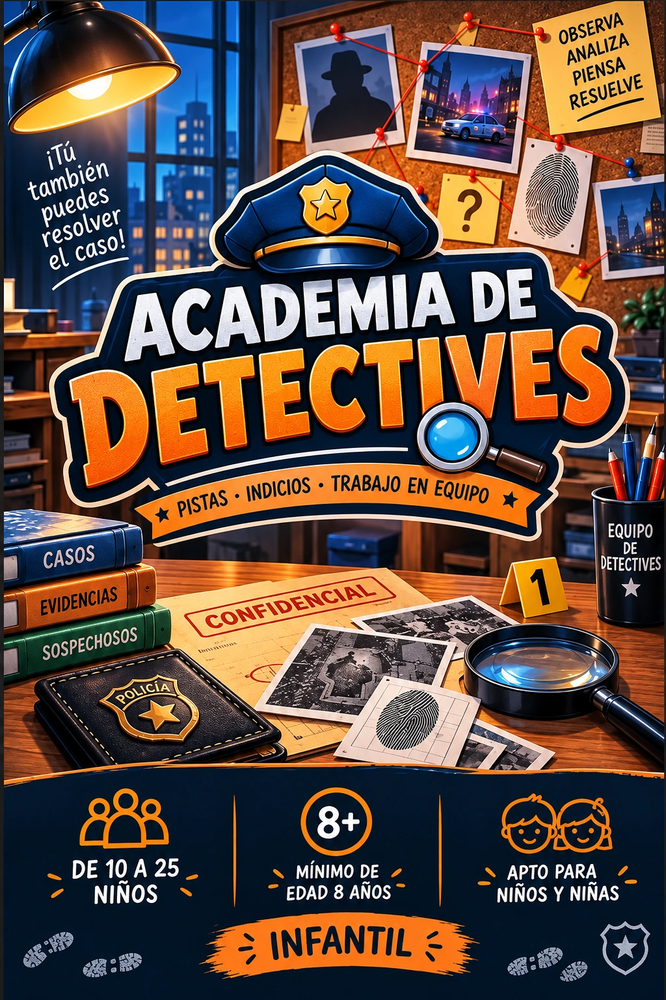

Ficha de catálogo
Academia de Detectives
Open Mind
Ficha de Academia de Detectives de Open Mind en Cornellà de Llobregat, con datos de ubicación, duración, jugadores y enlaces de consulta.

Ficha de Academia de Detectives de Open Mind en Cornellà de Llobregat, con datos de ubicación, duración, jugadores y enlaces de consulta.
🔎 ¡Atención, pequeños detectives! Un misterioso caso acaba de llegar a la Academia y necesitamos a los mejores investigadores para resolverlo.
Algo extraño ha sucedido y hay demasiadas preguntas sin respuesta. Las pistas están dispersas, las evidencias esperan ser descubiertas y solo un equipo de auténticos detectives será capaz de reconstruir lo ocurrido.
¡Ha llegado el momento de demostrar vuestro talento para la investigación!
La Academia de Detectives abre sus puertas a jóvenes aventureros dispuestos a poner a prueba su ingenio, su capacidad de observación y sus habilidades para resolver misterios.
🧐 ¿Seréis capaces de descubrir lo que otros han pasado por alto?
Durante 90 minutos de investigación, los participantes deberán buscar pistas, examinar evidencias, relacionar descubrimientos y resolver diferentes enigmas que los acercarán cada vez más a la verdad.
Pero cuidado... ¡No bastará con encontrar las pruebas! Tendréis que interpretarlas correctamente, compartir vuestras sospechas y escuchar atentamente las ideas de vuestros compañeros. Porque en esta academia, el secreto para resolver el caso está en el trabajo en equipo.
Cada pequeño investigador tendrá algo que aportar y cualquier detalle, por insignificante que parezca, podría convertirse en la pieza definitiva del rompecabezas.
🎉 ¡Una auténtica aventura detectivesca que también se convierte en una celebración inolvidable!
Diseñada especialmente para grupos de 10 a 25 niños a partir de 8 años, Academia de Detectives es una experiencia ideal para cumpleaños, fiestas infantiles y encuentros entre amigos. No se necesita experiencia previa en escape rooms, ya que todos recibirán las instrucciones necesarias antes de comenzar la misión.
Y cuando el misterio haya sido resuelto, ¡la diversión todavía no habrá terminado!
🍔 La aventura se desarrolla en La Previa Burger Shop, en Cornellà de Llobregat, donde los jóvenes detectives podrán celebrar el éxito de su investigación disfrutando de una comida o cena todos juntos, sin necesidad de desplazarse a otro lugar.
El plan incluye un menú infantil con hamburguesa de queso o fingers de pollo, acompañados de patatas y bebida. Además, las familias podrán llevar su propio pastel y regalos para completar la celebración.
Una experiencia que combina misterio, diversión, cooperación y una buena comida, convirtiendo a los niños en protagonistas de su propia aventura.
🔍 La investigación está abierta, las pistas esperan a ser descubiertas y un misterioso caso necesita vuestra ayuda...
🕵️ ¿Conseguiréis trabajar como un auténtico equipo de detectives, conectar todas las evidencias y descubrir la verdad?
🚨 ¡Preparad vuestras habilidades de investigación, reunid a vuestra pandilla y demostrad que estáis preparados para graduaros en la Academia de Detectives!